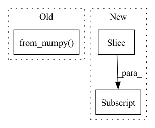

Pattern ID :19786
Before Change
if do_vad:
trimed = trim(sig.transpose(0, 1).numpy(), fs=sr, fs_vad=16000, hoplength=30, vad_mode=2)
if trimed is not None:
return t.from_numpy( trimed) .transpose(0, 1)
else:
return sig
else:After Change
if do_vad:
start, end = trim(sig.transpose(0, 1).numpy(), fs=sr, fs_vad=16000, hop_length=30, vad_mode=2)
if start != 0 and end != 0:
return sig[:, start: end]
else:
return sig
else:
return sigIn pattern: SUPERPATTERN
Frequency: 3
Non-data size: 3
Instances Fragment ID: 64489307
Project Name: tongjinle123/speech-transformer-pytorch_lightning
Commit Name: 71341ef8fde1e5d9113edf8bcec32c9f96f238c9
Time: 2020-02-25
Author: lancertong@live.com
File Name: src/data_loader/featurizer/utils/load.py
M Class Name: AnonimousClass
N Class Name: AnonimousClass
M Method Name: load(2)
N Method Name: load(2)
M Parent Class:
N Parent Class:
M File Name: src/data_loader/featurizer/utils/load.py
N File Name: src/data_loader/featurizer/utils/load.py
M Start Line: 10
M End Line: 12
N Start Line: 10
N End Line: 12
Before Change
// discretize valence into categories
bins = np.linspace(-1, 1, 4, endpoint=False)
class_labels = np.digitize(labels[..., 0], bins) - 1
batch["class_valence"] = torch.from_numpy( class_labels)
batch["label_arousal"] = torch.from_numpy(labels[..., 1])
return batch
After Change
if self.split != "test":
labels = self.labels[vid_name][start_frame: start_frame + track_len]
if has_expr:
expr_labels = self.labels_expr[vid_name][start_frame: start_frame + track_len]
else:
expr_labels = np.zeros(track_len, dtype=np.int64)
expr_valid = np.array([has_expr] * track_len) & (expr_labels >= 0)
// pad with boundary values, which will be discarded for evaluation Fragment ID: 64489308
Project Name: sailordiary/m3f.pytorch
Commit Name: a576188eaa852121b4277b8a4553ded796eadeb9
Time: 2020-02-03
Author: me@sailorzhang.com
File Name: models/dataset.py
M Class Name: AffWild2SequenceDataset
N Class Name: AffWild2SequenceDataset
M Method Name: __getitem__(2)
N Method Name: __getitem__(2)
M Parent Class: Dataset
N Parent Class: Dataset
M File Name: models/dataset.py
N File Name: models/dataset.py
M Start Line: 213
M End Line: 243
N Start Line: 199
N End Line: 255
Before Change
mask = (mask > 0) * 1
image = torch.from_numpy(image).unsqueeze(0).to(device)
mask = torch.from_numpy( mask) .unsqueeze(0).to(device)
inpainted_image = self.model(image, mask)
After Change
image = (image.transpose(1, 2, 0) * 255).astype(np.uint8)[:, :, ::-1]
for crop_image, crop_box in crop_result:
x1, y1, x2, y2 = crop_box
image[y1:y2, x1:x2, :] = crop_image
return image
def _run_box(self, image, mask, box): Fragment ID: 64489309
Project Name: sanster/lama-cleaner
Commit Name: 43c9c22c7312dd39feac4e3783e9ec080fd64243
Time: 2022-03-22
Author: cwq1913@gmail.com
File Name: lama_cleaner/lama/__init__.py
M Class Name: LaMa
N Class Name: LaMa
M Method Name: __call__(3)
N Method Name: __call__(3)
M Parent Class:
N Parent Class:
M File Name: lama_cleaner/lama/__init__.py
N File Name: lama_cleaner/lama/__init__.py
M Start Line: 40
M End Line: 55
N Start Line: 50
N End Line: 65